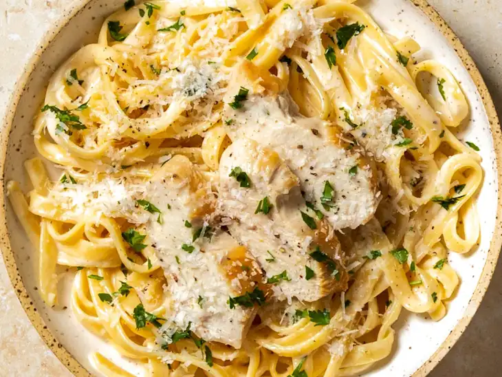

Chicken Alfredo recipe
Chicken Alfredo
Home

Description
Seasoned chicken and tender fettuccine tossed with a simple Parmesan cream sauce is so delicious, you'll never rely on bottled Alfredo sauce again.
Ingredients
- Fettuccine
- Heavy cream
- Chicken breasts
- Butter (European-style butter)
- Parmesan cheese
Steps
- Cook the pasta. Heat the pasta water before you start cooking the chicken, so that you can add the dried pasta when you start cooking the chicken breast. Save a cup of the pasta water to thin the sauce if needed
- Cook the chicken breasts until juicy and golden. This is our favorite golden, crispy chicken technique. You can cover the chicken breasts with aluminum foil while you finish the sauce to keep them warm.
- Make the Alfredo sauce. Whisk the Alfredo sauce together in the same skillet you used to cook the chicken.
- Toss it all in the sauce skillet. When the sauce is thickened and creamy, add the pasta and a splash of pasta water and toss to coat. Top with the chicken, and serve immediately.